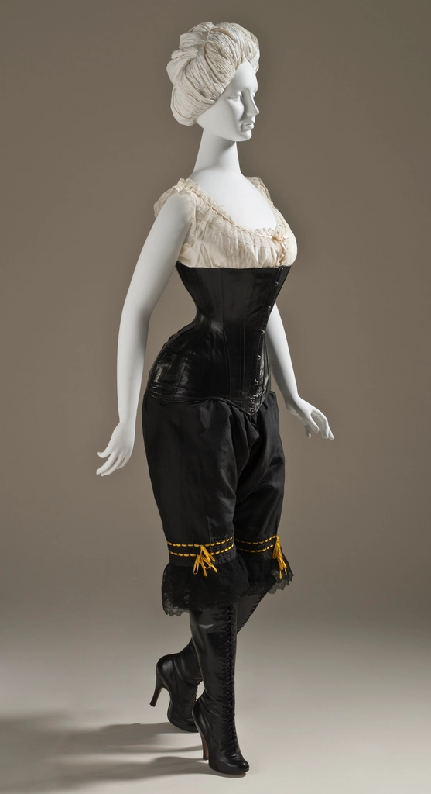

Project 01Body, structure, transformation
Post
Human
The body as scaffold. Architectural silhouettes and exaggerated proportions turn clothing into a structure the wearer inhabits.
- Inspiration
- Exoskeletons, load-bearing frames, shadow as volume
- Visual language
- Carbon black, hard shadow, monochrome plates
- Research note
- Boned bodices tested against free-hanging volume to find where support ends and silhouette begins.
